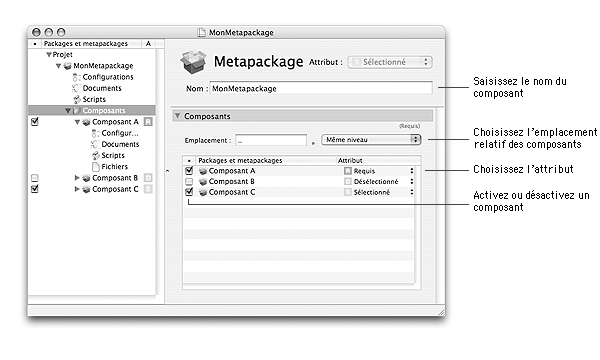

| Attribut | Installé par défaut | Modifiable en mode personnalisé |
| Sélectionné | Oui | Oui |
| Désélectionné | Non | Oui |
| Requis | Oui | Non |
Ce document décrit comment gérer les composants d'un projet, qu'il s'agisse d'ajouter un composant à un metapackage, trier des composants, importer des composants, effacer ou renommer un composant, etc.

Ajout d'un composant à un metapackageUn metapackage peut contenir un ou plusieurs composants. Il peut tout aussi bien s'agir de packages ou de metapackages. Il est possible d'ajouter des composants à un metapackage en :
Pour ajouter un nouveau composant à un metapackage existant :
| 1 | Sélectionnez le metapackage dans la colonne Packages et metapackages. | ||
| 2 | Choisissez Vue > Composants. | ||
| 3 | Choisissez Projet > Nouveau composant… .
| ||
| 4 | Tapez le nom du composant dans le champ Nom du composant. | ||
| 5 | Sélectionnez le type de composant dans le menu local Type. | ||
| 6 | Sélectionnez l'attribut du composant dans le menu local Attribut. | ||
| 7 | Cliquez sur Ajouter. |
Pour ajouter un package ou metapackage déja construit à un metapackage existant :
| 1 | Sélectionnez le metapackage dans la colonne Packages et metapackages. | ||
| 2 | Choisissez Vue > Composants. | ||
| 3 | Choisissez Projet > Importer des composants… .
| ||
| 4 | Sélectionnez les composants (.pkg ou .mpkg) que vous souhaitez importer.
| ||
| 5 | Cliquez sur Importer. |
Pour ajouter un package ou metapackage décrit par un projet PackageMaker à un metapackage existant :
| 1 | Sélectionnez le metapackage dans la colonne Packages et metapackages. | ||
| 2 | Choisissez Vue > Composants. | ||
| 3 | Sélectionnez dans l'application Finder le projet PackageMaker du composant que vous souhaitez ajouter.
| ||
| 4 | Glissez-déposez le fichier dans le tableau des composants. |
Pour ajouter un composant d'un autre projet Iceberg à un metapackage existant :
| 1 | Sélectionnez le metapackage dans la colonne Packages et metapackages. |
| 2 | Choisissez Vue > Composants. |
| 3 | Choisissez Fichier > Ouvrir… . |
| 4 | Sélectionnez le project Iceberg qui contient le composant que vous souhaitez ajouter au projet actuel et cliquez sur Ouvrir |
| 5 | Sélectionnez dans la colonne Packages et metapackages le composant que vous souhaitez ajouter. |
| 6 | Glissez-déposez le composant dans le tableau Composants du nouveau projet. |
Vous pouvez avoir envie de changer le nom d'un composant afin qu'il reflète au mieux le contenu de ce composant. Ce nom est, par ailleurs, celui qui sera utilisé pour le nom du bundle .pkg ou .mpkg qui sera construit par le projet.
|
Pour renommer un composant :
| 1 | Sélectionnez le metapackage dans la colonne Packages et metapackages. |
| 2 | Choisissez Projet > Renommer. |
| 3 | Tapez le nouveau nom dans le champ d'édition. |
| 4 | Validez la nouvelle valeur en tapant sur la touche Return. |
L'attribut d'un composant détermine si un composant d'un metapackage sera installé ou non par défaut. Cet état peut éventuellement être modifié par l'utilisateur s'il choisit le mode d'installation personnalisé dans l'application Programme d'installation.
Il existe trois valeurs possibles pour l'attribut d'un composant :
| ||||||||||||||||||
|
Pour modifier l'attribut d'un composant :
| 1 | Sélectionnez le composant dans la colonne Packages et metapackages. | ||
| 2 | Choisissez l'attribut dans le menu local Attribut.
|
Par défaut, lorsqu'un composant est ajouté à un projet, il est activé. Cela signifie que lors de la construction du projet, le composant sera construit. Cet état est représenté dans l'interface utilisateur par la colonne Adhésion (dont l'en-tête est •).
Pour activer ou désactiver un composant :
| 1 | Sélectionnez le composant dans la colonne Packages et metapackages. | ||
| 2 | Cochez ou décochez la boîte à cocher dans la colonne Adhésion (•).
|
Vous pouvez effacer un composant pour le retirer de la hiérarchie des composants. Si vous effacez un metapackage, tous les composants de ce metapackage seront effacés eux aussi.
Pour effacer un composant :
| 1 | Sélectionnez le composant dans la colonne Packages et metapackages. | ||
| 2 | Choisissez Édition > Effacer | ||
| 3 | Cliquez sur Effacer
|
Vous pouvez réorganiser la hiérarchie des composants en déplaçant un composant d'un niveau à un autre ou en triant les composants d'un même niveau. La hiérarchie des composants telle que représentée dans la colonne Packages et metapackages reflète la hiérarchie qui sera affichée dans le mode d'installation personnalisée du Programme d'installation.
Pour déplacer un composant d'un niveau à un autre :
| 1 | Sélectionnez le composant dans la colonne Packages et metapackages. | ||
| 2 | Glissez-déplacez le composant dans le dossier Composants du metapackage cible.
|
Pour trier manuellement les composants d'un même niveau :
| 1 | Sélectionnez le composant dans la colonne Packages et metapackages. |
| 2 | Glissez-déplacez le composant à un autre emplacement dans le dossier Composants du metapackage qui le contient. |
Pour trier automatiquement les composants d'un même niveau :
| 1 | Sélectionnez le metapackage dont vous souhaitez trier les composants dans la colonne Packages et metapackages. |
| 2 | Choisissez Vue > Composants. |
| 3 | Choisissez Projet > Trier > Par nom pour trier les composants par ordre alphabétique ou Projet > Trier > Par attribut pour les trier par attribut. |
Si vous le souhaitez, vous pouvez regrouper des composants d'un même niveau au sein d'un metapackage. Il est aussi possible de dégrouper tous les composants d'un metapackage.
Pour regrouper les composants d'un même niveau dans un metapackage :
| 1 | Sélectionnez les composants que vous souhaitez regrouper dans la colonne Packages et metapackages.
| ||
| 2 | Choisissez Projet > Grouper. |
Pour dégrouper tous les composants d'un même metapackage :
| 1 | Sélectionnez tous les composants au premier niveau du metapackage dans la colonne Packages et metapackages.
| ||
| 2 | Choisissez Projet > Dégrouper. |
Par défaut, lors de la construction d'un projet, les sous-composants d'un metapackage sont créés au même niveau que le metapackage. Si vous le souhaitez, vous pouvez changer l'emplacement relatif des sous-composants pour qu'ils soient par exemple créé à l'intérieur du metapackage.
Pour modifier l'emplacement relatif des composants d'un metapackage :
| 1 | Sélectionnez le metapackage dans la colonne Packages et metapackages. | ||
| 2 | Choisissez Vue > Composants. | ||
| 3 | Sélectionnez l'emplacement relatif dans le menu local Emplacement ou saisissez le chemin relatif dans le champ texte Emplacement.
|